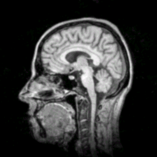
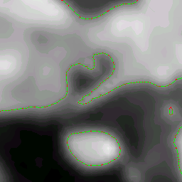
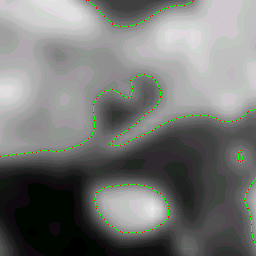

ExtractLevelCurves.cpp
Extraction of Level Sets from 2D Images
The original image is a gray scale MRI slice of size 256-by-256. The other two images are zoomed copies of the 32-by-32 subimage with origin at (100,100) in the original image.
|  |
|   |
The left image used extraction by decomposing each square pixel into two triangles and assuming a linear interpolation on each triangle. The right image used extraction by assuming a bilinear interpolation on each square pixel.